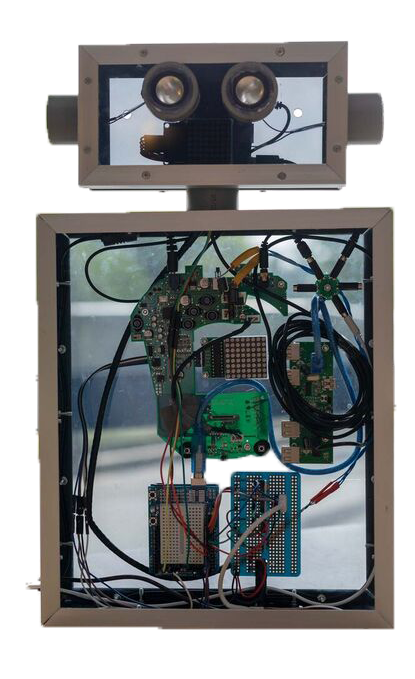
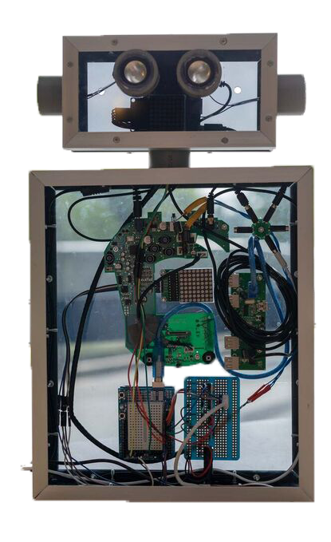

Artificial creature
Dit project is uitgevoerd voor het vak ‘Human computer intelligence’. De opdracht is om iets te maken met behulp van de theorieën die geleerd zijn.
Dit project is uitgevoerd voor het vak ‘Human computer intelligence’. De opdracht is om iets te maken met behulp van de theorieën die geleerd zijn.
Tijdens dit vak zijn er vier verschillende onderwerpen aanbod gekomen. Dit waren exertion gaming, Augmented reality & Virtual reality, Wearables en Artificial creature. Tijdens het vak leerde je alles over deze onderwerpen en hoe ze werken. In de laatste twee weken kreeg je een onderwerp toegewezen waarbij je iets moest maken met behulp van de informatie die je over dit onderwerp geleerd hebt. Ik kreeg het onderwerp Artificial creature toegewezen.
In deze twee weken, de labweken, werkte ik aan het maken van een artificial creature genaamd Goo Goo. Dit is een robot die tegen je praat en vragen beantwoordt. Het idee erachter is dat het een soort kamergenoot is, iemand met wie je kunt praten. Je kunt haar alles vragen, iets over haarzelf, wie ze is, wat ze kan doen of over andere dingen, zoals een bepaald recept, het weer, sport, het laatste nieuws, enz.
Om Goo Goo aan de praat te krijgen, moet je altijd beginnen met “hey Goo Goo”. Op dat moment worden haar lichten, die eerst wit waren, rood om je te laten weten dat ze luistert. Dan stel je je vraag, waarbij de lichten vervolgens blauw worden om je te laten weten dat ze gaat antwoorden. Met behulp van de raspberry pi is google assist aan haar toegevoegd, wat betekent dat ze alle vragen kan beantwoorden die google ook kan beantwoorden. Je kan er zelf ook een aantal toevoegen met hierbij het antwoord die ze moet geven.
Klik op de knop om meer te leren over de onderwerpen en het proces. Wil je nog meer zien van Goo Goo? Bekijk het filmpje hiernaast of ga naar de pagina 'labweken' in de portfolio.